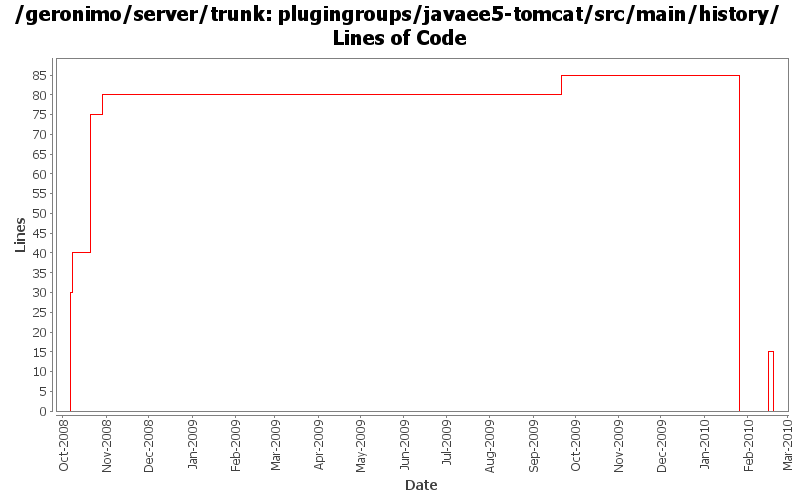

[root]/plugingroups/javaee5-tomcat/src/main/history

| Author | Changes | Lines of Code | Lines per Change |
|---|---|---|---|
| Totals | 15 (100.0%) | 223 (100.0%) | 14.8 |
| djencks | 6 (40.0%) | 101 (45.3%) | 16.8 |
| linsun | 3 (20.0%) | 93 (41.7%) | 31.0 |
| dwoods | 4 (26.7%) | 18 (8.1%) | 4.5 |
| genspring | 1 (6.7%) | 6 (2.7%) | 6.0 |
| manugeorge | 1 (6.7%) | 5 (2.2%) | 5.0 |
add RFC66 WAB plugingroups based on test servers under plugins/wab. Also rename tomcat plugin from javaee5 to javaee6.
0 lines of code changed in 1 file:
formatting changes from a regeneration
5 lines of code changed in 1 file:
add welcome app, console and plugin portlet back into the javaee assemblies; also update the plugin-repos to 3.0
15 lines of code changed in 1 file:
build plugin groups, but trim them to what is available
0 lines of code changed in 1 file:
GERONIMO-4883 ship agent-car-jmx and make it default agent, mark ejb agent as "load=false".
6 lines of code changed in 1 file:
update other XML files with embedded versions from 2.2-SNAPSHOT to 3.0-SNAPSHOT
1 lines of code changed in 1 file:
GERONIMO-4692 sort dependencies.xml, except for connector-1_6
43 lines of code changed in 1 file:
GERONIMO-4538 Move boilerplate to configs, make groupIds more sensible
1 lines of code changed in 1 file:
GERONIMO-4337 rename AMQ5 modules to old names that apps expect
2 lines of code changed in 1 file:
GERONIMO-4337 upgrade to activemq 5.2. Reduced console functionality
41 lines of code changed in 1 file:
GERONIMO-4415 use jpa for data access in monitoring console
11 lines of code changed in 1 file:
Merging patch for GERONIMO-3811 EjbServer Portlet.
5 lines of code changed in 1 file:
GERONIMO-4371 remove unnecessary plugin groups
47 lines of code changed in 1 file:
some modification to the javaee5 plugin groups and some format changes
16 lines of code changed in 1 file:
add javaee5 jetty and tomcat plugin groups (related to GERONIMO-4316)
30 lines of code changed in 1 file: